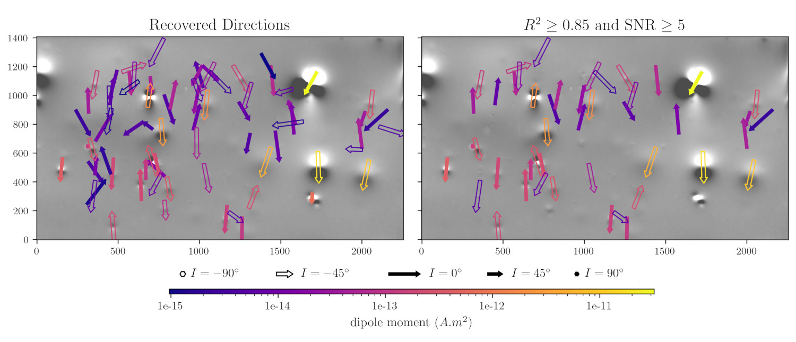

Preprint: Automatic dipole moment inversion of magnetic microscopy images
2023/06/14
We have a new preprint out on EarthArXiv:
Souza Junior, G.F., Uieda, L., Trindade, R.I.F., Carmo, J., and Fu, R. (2023). Full vector inversion of magnetic microscopy images using Euler deconvolution as a priori information. EarthArXiv. doi:10.31223/x5qd5z
This is the first publication produced as part of lab member Gelson F. Souza Junior’s PhD research and our Royal Society grant. It presents a new method to automatically identify the signal from individual magnetic particles in magnetic microscopy images and linearly invert the data in 2 steps to determine the position and dipole moment of each particle. The idea for this work came from combining the group’s expertise in applied geophysics and paleomagnetism.
The proof-of-concept code that implements the method is available on the GitHub repository compgeolab/micromag-euler-dipole. A more user-friendly version will be implemented in the open-source library Magali, which is under construction.
